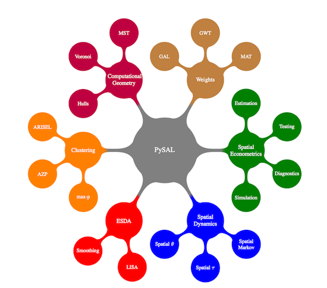

PySal QGIS Plugin ERROR
PySal may require a newer version of numpy as well as scipy to be installed for the QGIS python interpreter.
The folders numpy, scipy, and pysal are inlcuded in your PySal Plugin Folder and should be placed copied to :\\%YOUR QGIS INSTALLATION%\Apps\Python25\Lib\site-packages\
If this does not fix this error message, causes other errors, or for more information, please contact the plugin developers (group names)
